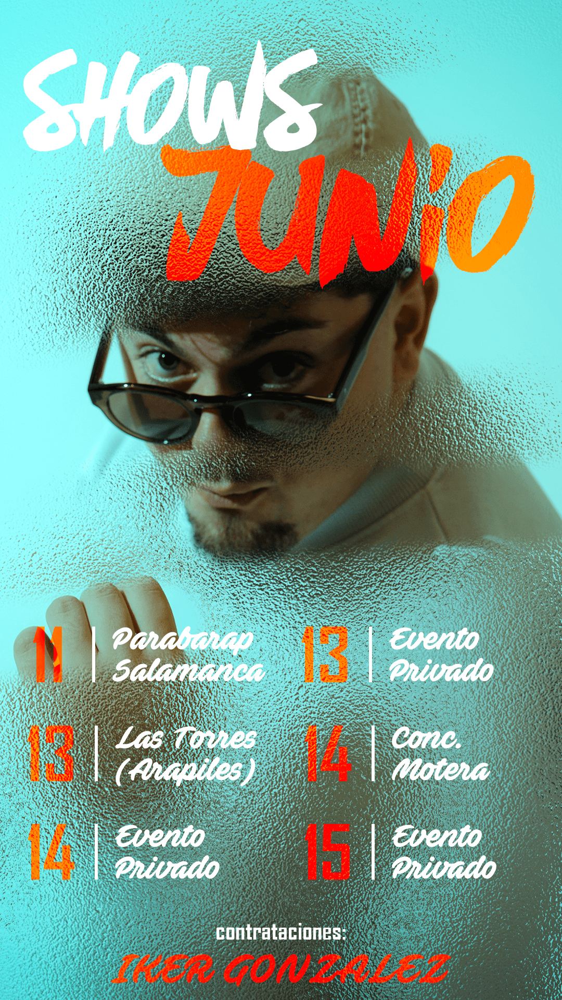
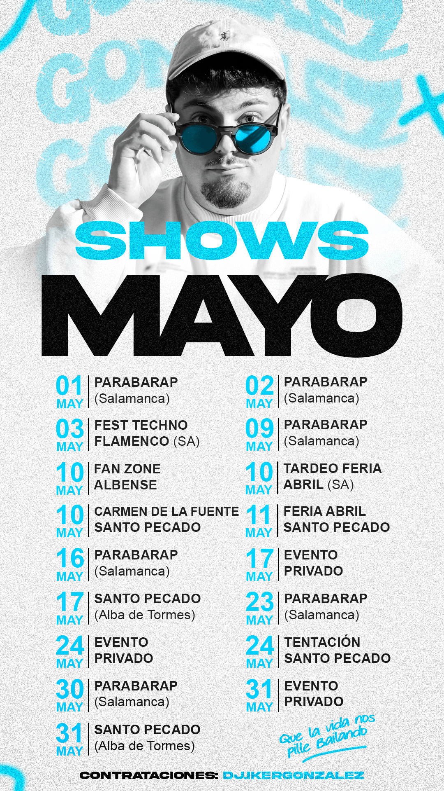
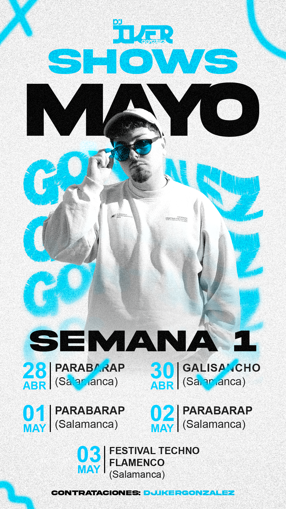
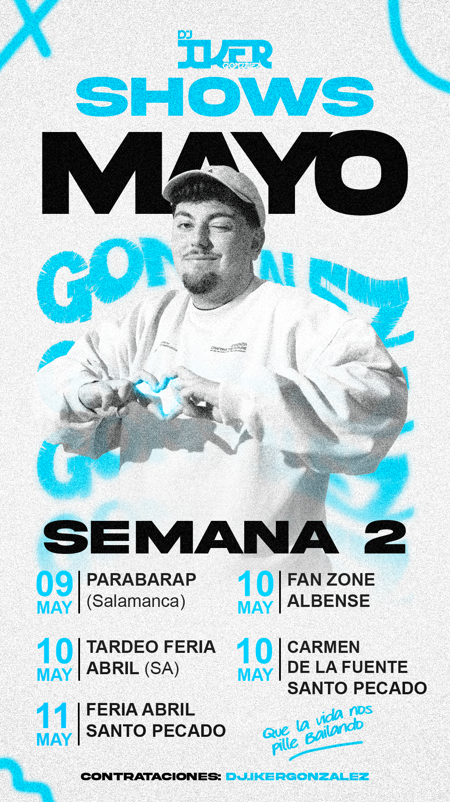
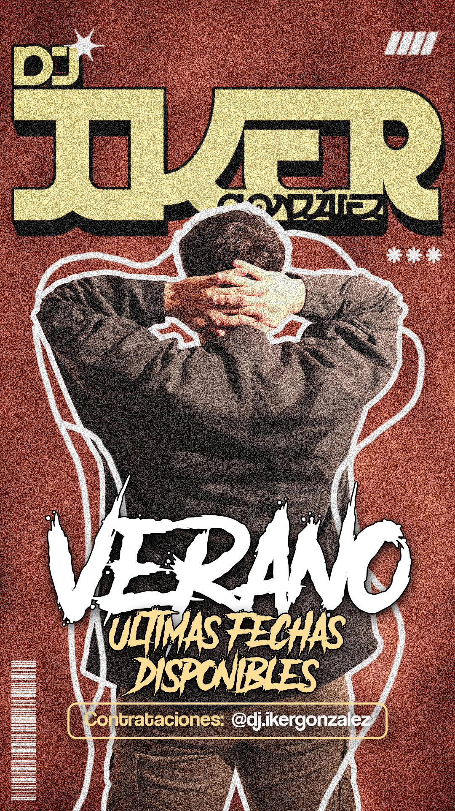

El Reto: Huir del Flyer Genérico
En la industria del ocio nocturno, la imagen que proyecta un artista en sus redes sociales es tan importante como su selección musical. El objetivo de este proyecto fue diseñar un universo visual propio para un DJ en pleno crecimiento, alejándonos de las plantillas de club nocturno genéricas para construir una marca personal con autoridad, ritmo y una estética visual muy cuidada.

Cartelería Digital: Tour Dates y Lanzamientos
La estrategia gráfica se centró en unificar la comunicación del artista. Diseñé una línea visual de alto impacto para anunciar sus Tour Dates (fechas de gira) y actuaciones destacadas. Se priorizó una composición tipográfica agresiva, un tratamiento de color inmersivo y el uso de texturas que transmiten la energía de la música en directo. Cada post fue conceptualizado para detener el scroll y generar una percepción de evento exclusivo.
El Formato Rey: Diseño Vertical para Stories
Sabiendo que el 80% de la interacción de los fans ocurre en Instagram Stories, el sistema visual se adaptó meticulosamente al formato vertical (9:16). Se crearon animaciones ligeras y cartelería dinámica para line-ups, set times y recordatorios de venta de entradas, manteniendo siempre el ADN visual del artista intacto.
Stories Destacadas



El Resultado
Este enfoque integral demostró cómo un diseño cohesivo y bien ejecutado puede transformar la percepción de un artista. Al estandarizar la calidad de su contenido promocional, se logró proyectar una imagen mucho más profesional ante promotores, salas y público, convirtiendo cada anuncio en una pieza de diseño atractiva por sí misma.
